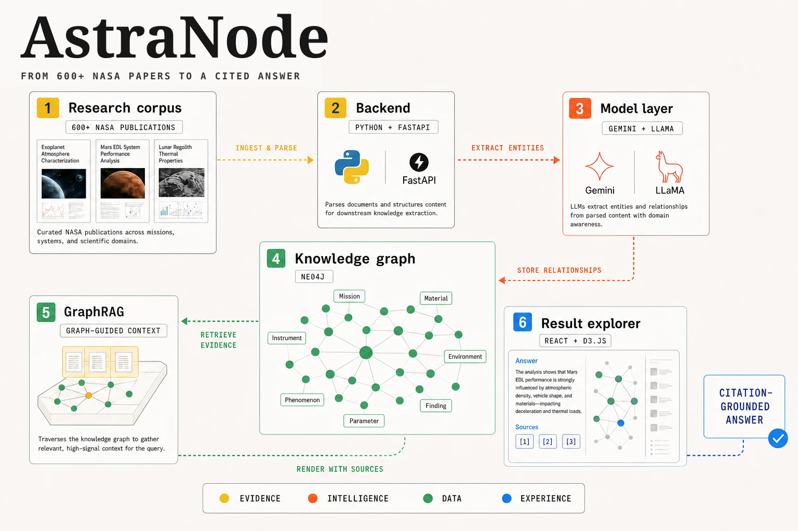

Use a graph for connected questions
Represented extracted entities and relationships in Neo4j so retrieval could traverse scientific connections rather than return isolated text chunks.
Case study 02 / Applied AI + data
A citation-grounded GraphRAG explorer that connected hundreds of NASA bioscience publications under a 48-hour build constraint.
01 / Problem
The challenge was to make relationships across NASA bioscience research inspectable without reducing the experience to opaque semantic search. Answers needed a visible route back to the source material.
The 48-hour constraint required a narrow product loop: ingest the corpus, extract useful relationships, build a graph, retrieve connected evidence, and expose citations in a usable interface.
02 / Architecture
Python services processed the corpus, Gemini and LLaMA supported entity and relationship extraction, Neo4j stored the graph, FastAPI exposed retrieval, and a React and D3 interface made the evidence explorable.

The retrieval layer preserved source references so users could inspect the publications supporting an answer.
03 / Decisions
Represented extracted entities and relationships in Neo4j so retrieval could traverse scientific connections rather than return isolated text chunks.
Made sources part of the answer experience so generated output remained inspectable.
Kept corpus processing and extraction distinct from the API and interface, allowing each layer to evolve independently.
Prioritized one end-to-end path that could be evaluated within the challenge window instead of spreading effort across disconnected features.
04 / Outcome
AstraNode advanced from the Phoenix NASA Space Apps Challenge to Global Judging, demonstrating a complete retrieval product rather than a static research prototype.